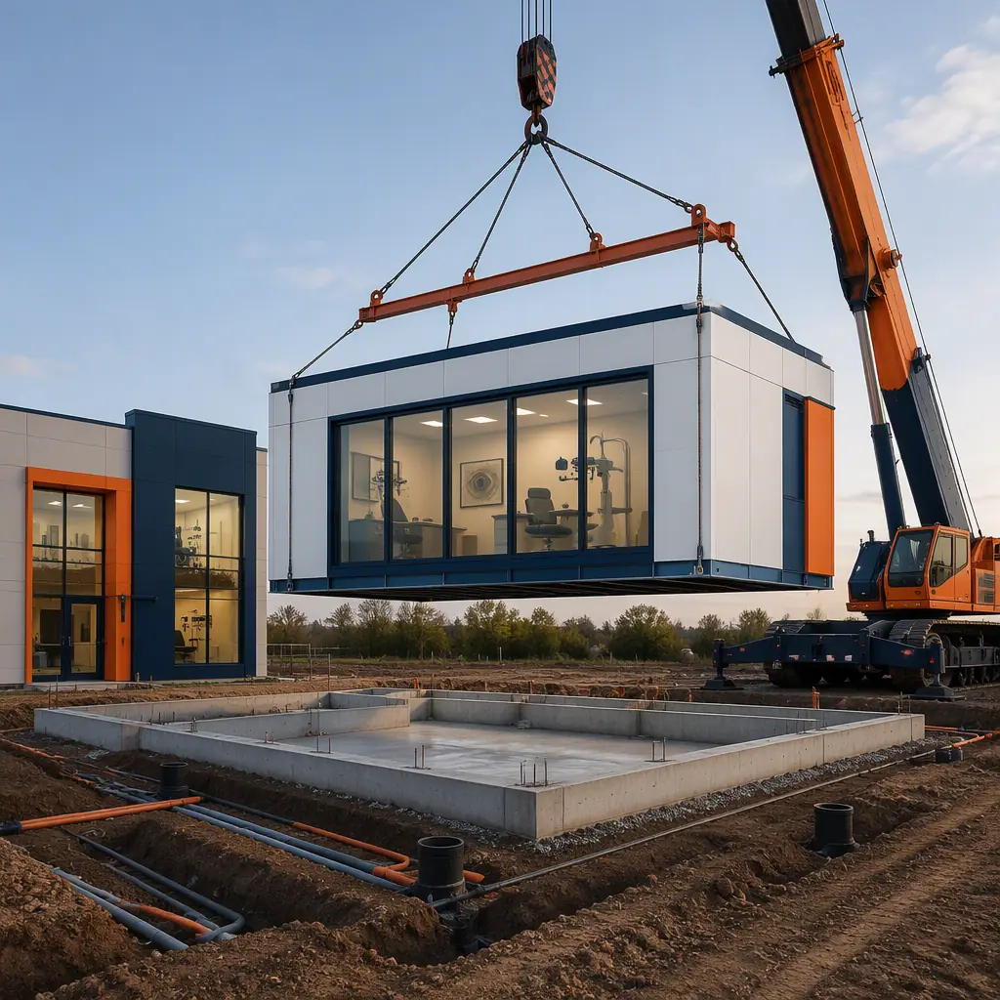
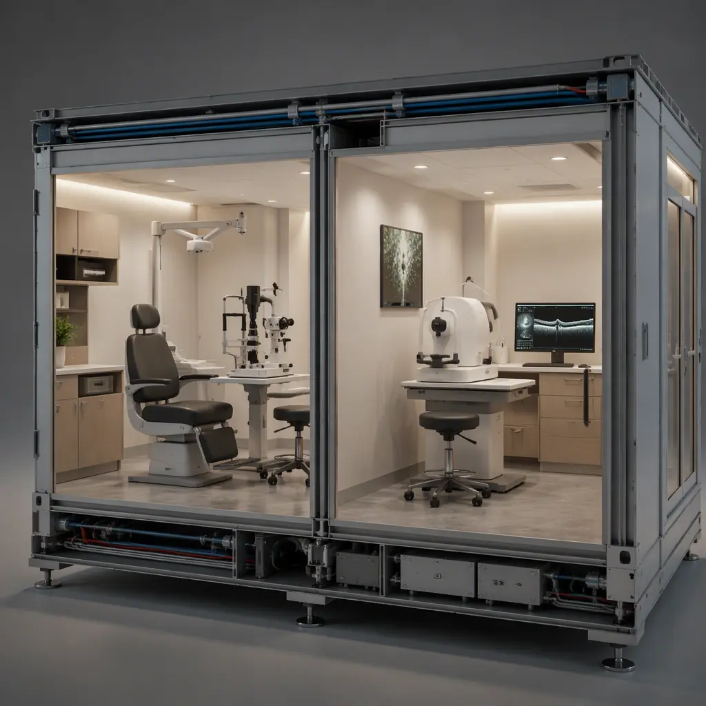
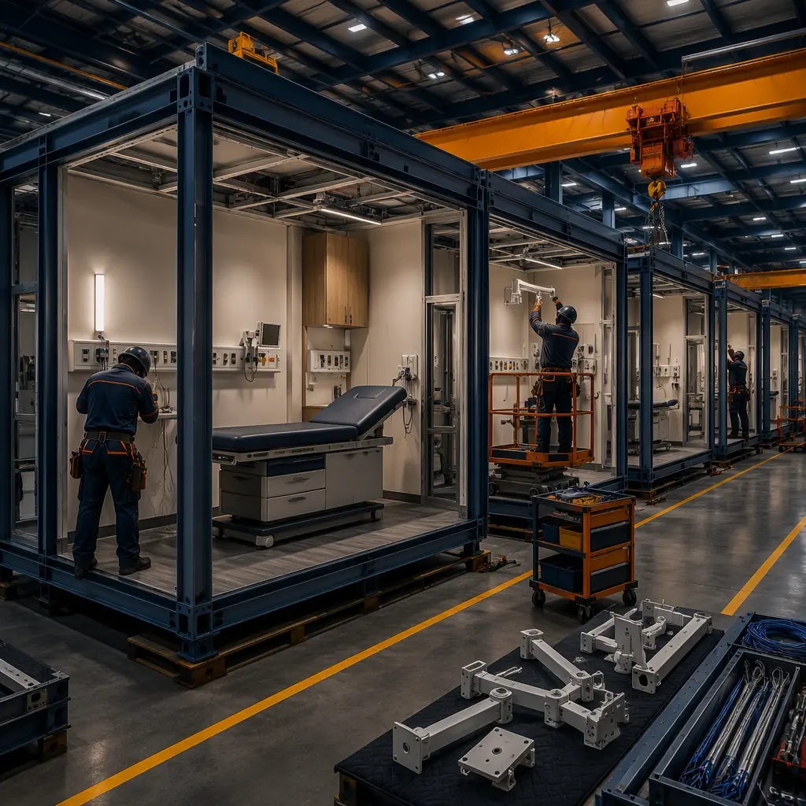

An eye care clinic looks like a simple medical office, but it is one of the most equipment-sensitive building types in ambulatory care. A modern ophthalmology practice packs exam lanes with slit lamps and phoropters, diagnostic suites with OCT and visual field machines that demand precise vibration and light control, and laser suites where refractive procedures create real safety hazards for staff and patients. The global vision care market is expanding with aging populations and screen-driven lifestyles, and private equity-backed vision groups are consolidating and building out networks of clinics at a pace that conventional construction cannot match: a typical site-built clinic takes 12–18 months from lease to opening, while the equipment and staffing plan is often locked six months before the doors open. Modular construction compresses that to an 8–12 week factory production cycle with a 2–3 week site set, because the exam suites, imaging rooms, and laser suites are engineered into factory-built modules where the specialized MEP and shielding requirements are installed and tested before shipment. This guide explains the eye care clinic building program, how modular delivery satisfies imaging, laser, and infection-control requirements, and what vision care groups should specify before they build.

Why Vision Care Groups Are Going Modular
Three factors make modular delivery a strong fit for eye care networks. First, the clinic is defined by its rooms, not its architecture: exam lanes, imaging suites, and laser suites follow repeatable programs across a network, and repetition is what factory production does best. Second, the schedule is commercially critical — vision groups buy and lease practices, then race to open the new location before the patient list and referring physicians drift to competitors. Every month of construction delay is a month of lost revenue on an already-committed patient base. Third, the risk is concentrated in a few systems: imaging vibration and light control, laser suite shielding and ventilation, and infection control. All three are dramatically more reliable when factory-installed and pre-verified than when coordinated by site trades. The quality-gate discipline that makes factory testing reliable — documented inspections at every stage of production — is the same system MODURA applies across building types, covered in our factory quality control guide.
Vision groups also value standardization: when every clinic in a network shares the same exam lane module and the same imaging suite package, staff training, equipment procurement, and maintenance become predictable, and relocating a clinic becomes a matter of moving modules rather than rebuilding. The same steel-frame structural logic that makes modules relocatable is documented in our modular medical clinics and outpatient construction guide.
The Eye Care Clinic Building Program: Lanes, Suites, and Support
An eye care clinic is a compact, room-dense building. A typical 5,000–12,000 sq ft practice breaks down as follows:
- Exam lanes (40–50% of clinical area). The core revenue unit: a 90–120 sq ft room with an exam chair, slit lamp, phoropter, and computer station. A growing practice operates 8–20 lanes, each turning 6–10 patients per hour.
- Imaging suites (10–15% of clinical area). OCT, visual field, topography, and fundus photography machines that require controlled light levels (dimming to near-dark), vibration isolation, and dedicated power with line conditioning.
- Laser and procedure suites. Refractive laser (LASIK/SMILE) rooms require controlled temperature and humidity, positive pressure, and interlocked safety systems; minor procedure rooms handle lid surgery and injections under local anesthesia.
- Optical dispensing and retail. The frame and lens showroom — the highest-margin square footage in the building, with lighting designed to render lens and frame colors accurately.
- Front and back of house. Reception, waiting, records, staff workrooms, and a sterilization area for instruments.
Every element maps onto factory production. Exam lanes are delivered as pre-fitted modules with the exam chair mount, instrument power, and data drops already in place; imaging suites arrive with dimmable lighting, vibration isolation mounts, and conditioned power installed; and the optical retail zone is pre-wired for display lighting. The MEP engineering that carries these systems — power, lighting control, HVAC — is the same factory-integrated approach documented in our modular MEP systems integration guide.

Imaging and Laser Suites: Shielding, Vibration, and Light Control
The clinical equipment is the reason most eye care clinics are built the way they are, and it drives the hardest requirements. OCT and visual field machines need vibration isolation — a floor with resonance above 8–10 Hz and isolation mounts under the instruments — because a passing truck or an HVAC fan can blur a scan. Light control is equally strict: imaging rooms need dimming to near-dark (5 lux or less) with blackout window treatments, because ambient light corrupts retinal imaging. The laser suite adds safety requirements: refractive lasers use Class 4 beams that require interlocked door controls, controlled access, and ventilation that removes laser plume and maintains positive pressure relative to corridors.
Factory-built clinics engineer this in rather than commissioning it in the field. The vibration isolation mounts, dimmable lighting systems, and interlocked laser safety controls are installed and tested in the factory, so the owner receives a suite that has already proven its imaging environment before shipment. The same approach applies to the imaging-heavy spaces MODURA builds across healthcare, documented in our modular diagnostic imaging and radiology centers guide, which covers the shielding and structural requirements that imaging rooms share.
Infection Control, HVAC, and the Clinical Environment
Eye care clinics carry a moderate infection-control load: instrument sterilization, hand hygiene stations, and exam rooms that must be cleaned between patients. The HVAC design follows outpatient clinical standards — MERV 13 filtration, 4–6 air changes per hour in exam areas, and temperature and humidity control tight enough for laser equipment (typically 68–75°F, 30–50% RH). The procedure room adds positive pressure relative to corridors, and the sterilization area needs dedicated exhaust for any chemical agents used in instrument processing.
Factory-built clinics deliver these systems pre-verified: the HVAC units, filtration, and pressure relationships are installed and balanced in the factory, with the pressure differentials measured before shipment rather than after occupancy. The infection-control and HVAC logic for outpatient facilities is covered in depth in our modular healthcare facilities construction guide, and the fire and life-safety requirements for the occupancy are covered in our modular fire safety guide.
Factory Production and the 8–12 Week Schedule
The clinic is built indoors because clinical quality is controlled indoors. Exam lanes are pre-fitted with instrument mounts and power, imaging suites are built with verified light and vibration performance, and the laser suite is assembled with its interlocked safety systems in place. Every connection is documented in the submittal package — the same production-line discipline of weld verification, dimensional checks, and MEP testing at defined gates that MODURA documents in our factory quality control guide. Weather independence matters for clinic projects too: a practice opening in a winter market does not lose its schedule to frozen site work, because the building work happens in a climate-controlled factory and the site work is limited to foundations, utilities, and a short set window.
On site, the set is measured in weeks, not seasons: foundations and utility runs are prepared in parallel with factory production, and the modules are set, joined, and interconnected over a 2–3 week window, followed by equipment installation, clinical commissioning, and licensing inspection. The full schedule comparison of factory-built versus conventional delivery is in our modular construction timeline analysis.

Cost Benchmarks for Eye Care Clinics
Eye care clinic economics are driven by the equipment and the clinical environment: imaging suites, laser safety systems, and HVAC together account for 25–40% of project cost, which is why the factory-integrated approach of modular delivery has such a large impact. For a typical 8-lane practice of roughly 8,000 sq ft, modular delivery lands at $220–320 per sq ft complete — or $1.8–2.6 million fully built — compared with $280–400 per sq ft for equivalent site-built construction. The 20–30% saving comes from factory labor efficiency, compressed schedule, and the elimination of specialty-contractor coordination risk on the clinical systems.
| Benchmark | Site-Built Clinic | Modular Clinic |
|---|---|---|
| Lease to opening | 12–18 months | 5–8 months |
| Building cost (8-lane practice) | $280–400 / sq ft | $220–320 / sq ft |
| Imaging suite environment | Field-tuned after install | Factory-verified light & vibration |
| Laser suite safety | Field-installed interlocks | Factory-installed, pre-tested interlocks |
| On-site set window | N/A (sequential trades) | 2–3 weeks |
| Network standardization | Unique build each site | Repeatable lane & suite modules |
For vision care groups, the economics compound across a network: standardized lane modules mean volume procurement of exam equipment, faster staff onboarding, and predictable maintenance across dozens of locations. Groups should structure procurement around performance — committed opening date, verified imaging environment, documented laser safety systems — using the framework in our modular RFP and procurement guide. Per-square-foot benchmarks across building types are in our modular construction cost guide, and the specialized-clinic delivery logic for other single-specialty practices is documented in our modular dialysis centers guide.
An eye care clinic fails on environment, not walls: the imaging room's light and vibration, the laser suite's safety interlocks, and the exam lane's instrument infrastructure. Factory production is the only delivery method where those systems are built, tested, and documented as one integrated clinic — before it ever reaches the site.
Compliance, Licensing, and the Business Case
Eye care clinics carry a moderate compliance load: state licensing for the medical occupancy, building code requirements for the ambulatory care type, fire and life-safety requirements, and accessibility standards for exam rooms and equipment. Imaging suites may also trigger state radiation-safety review where certain diagnostic devices are used, and the approval sequence for factory-built structures is covered in our permitting and zoning guide. The ambulatory care delivery logic that eye care shares with other single-specialty practices — and the regulatory pathway for outpatient facilities — is covered in our modular medical clinics guide.
On the business side, eye care is one of the most consolidation-friendly sectors in healthcare: vision groups aggregate independent practices, standardize operations, and expand into under-served geographies, and factory-built clinics fit that model because they deliver identical, fast, code-compliant buildings at scale. Patient flow shapes the floor plan as much as the equipment does: a well-run clinic moves patients through reception, pre-testing, the exam lane, and the optical showroom in a loop that never crosses the clinical corridor, and the modular program delivers that flow as a designed sequence of connected modules rather than an improvised arrangement of rooms. For groups that operate multiple sites, the standardized lane module also shortens staff onboarding and equipment training, because every location runs the same room, the same power layout, and the same IT drops — a level of operational consistency that is difficult to achieve with site-built locations built one at a time by different contractors. The same network expansion logic applies to other clinical formats MODURA builds, from veterinary clinics and animal hospitals to community health centers. Whichever path applies, the key is to specify the clinical environment first — lane count, imaging requirements, laser safety systems — and let the factory build the clinic around them.